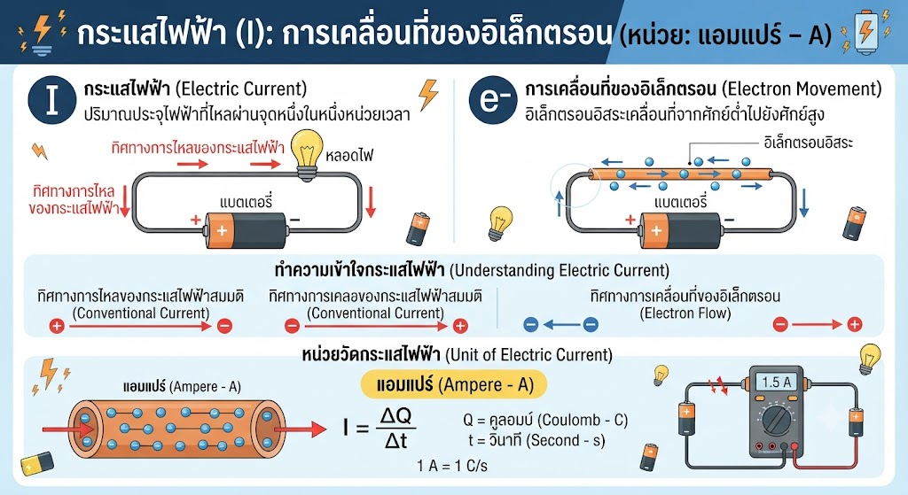
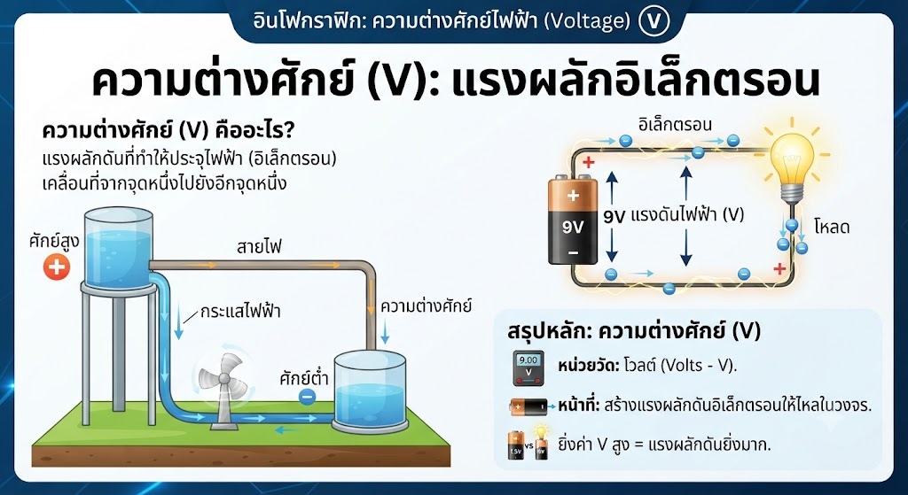
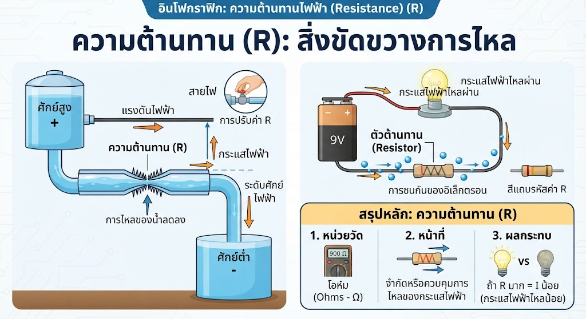
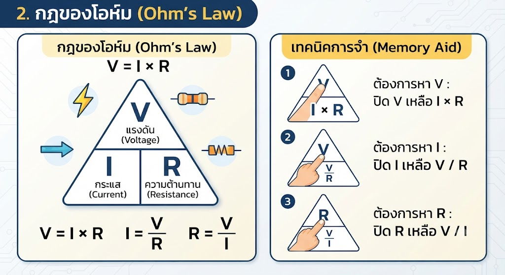
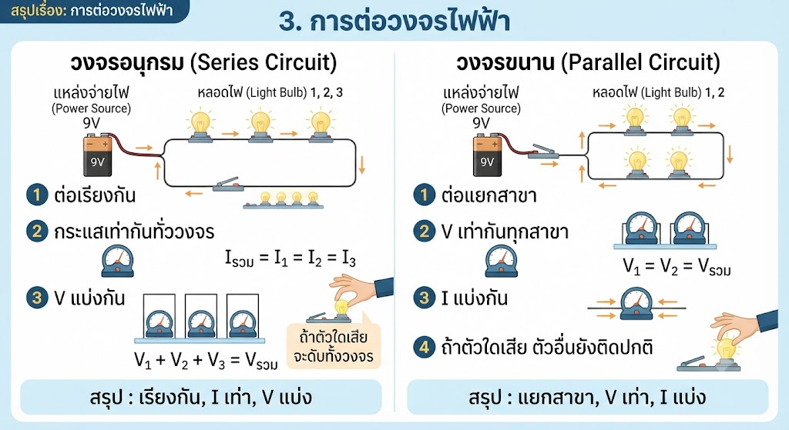
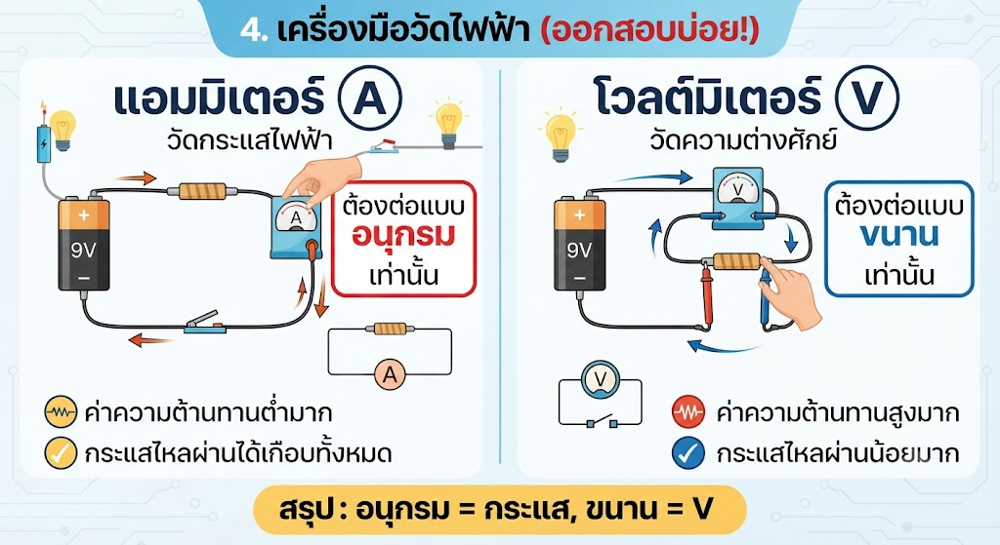
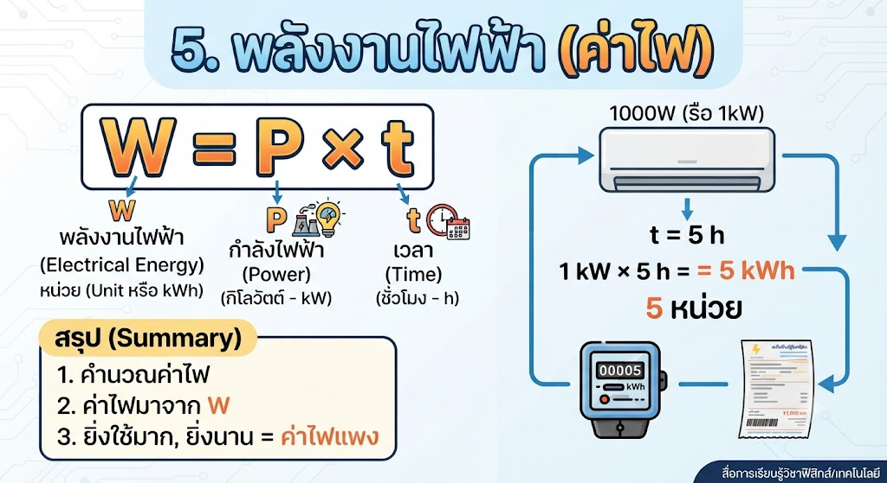

โดย: พระจอมเกล้าติวเตอร์
สรุปเนื้อหาสำคัญสำหรับพิชิตข้อสอบเข้า ม.1 โดยเน้นพื้นฐานที่ออกสอบบ่อยที่สุดครับ:
กระแสไฟฟ้า (I): การเคลื่อนที่ของอิเล็กตรอน (หน่วย: แอมแปร์ - A)




เทคนิคการจำ: V (แรงดัน) อยู่บนยอดสามเหลี่ยม I และ R อยู่ด้านล่าง


ใช้สูตร: W = P × t
โดย P คือกำลังไฟฟ้า (กิโลวัตต์ - kW) และ t คือเวลา (ชั่วโมง - h) ผลลัพธ์ที่ได้เรียกว่า "หน่วย" (Unit หรือ kWh)
1. การวัดกระแสไฟฟ้าต้องต่อเครื่องมือวัดอย่างไร?
ต่อแบบขนาน2. หน่วยของพลังงานไฟฟ้าที่ใช้คิดค่าไฟคืออะไร?
โอห์มโดย: พระจอมเกล้าติวเตอร์
สรุปเนื้อหาสำคัญสำหรับพิชิตข้อสอบเข้า ม.1 โดยเน้นพื้นฐานที่ออกสอบบ่อยที่สุดครับ:
กระแสไฟฟ้า (I): การเคลื่อนที่ของอิเล็กตรอน (หน่วย: แอมแปร์ - A)
ความต่างศักย์ (V): แรงผลักอิเล็กตรอน (หน่วย: โวลต์ - V)
ความต้านทาน (R): สิ่งขัดขวางการไหล (หน่วย: โอห์ม - Ω)
เทคนิคการจำ: V (แรงดัน) อยู่บนยอดสามเหลี่ยม I และ R อยู่ด้านล่าง

ใช้สูตร: W = P × t
โดย P คือกำลังไฟฟ้า (กิโลวัตต์ - kW) และ t คือเวลา (ชั่วโมง - h) ผลลัพธ์ที่ได้เรียกว่า "หน่วย" (Unit หรือ kWh)
1. การวัดกระแสไฟฟ้าต้องต่อเครื่องมือวัดอย่างไร?
ต่อแบบขนาน2. หน่วยของพลังงานไฟฟ้าที่ใช้คิดค่าไฟคืออะไร?
โอห์มเขียนโดย พระจอมเกล้าติวเตอร์